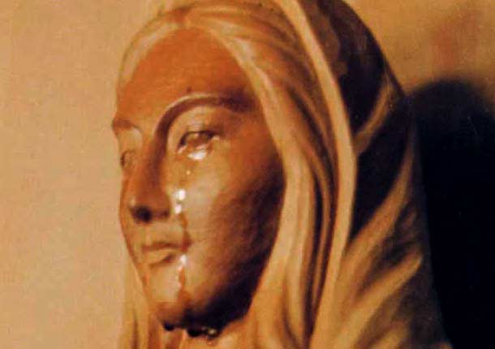
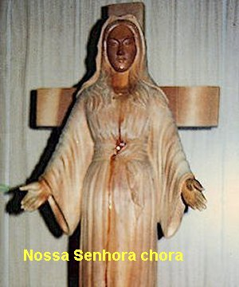
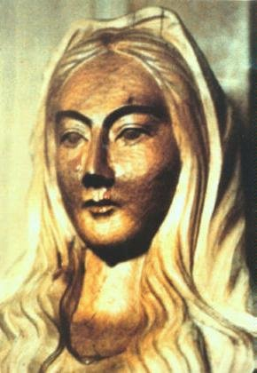
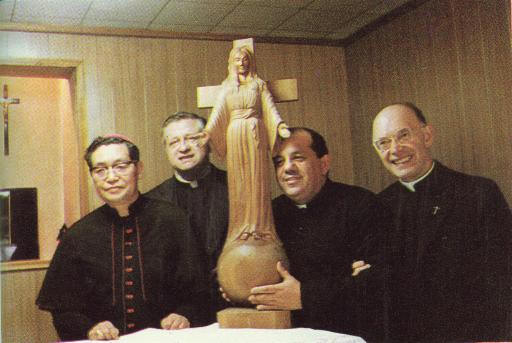
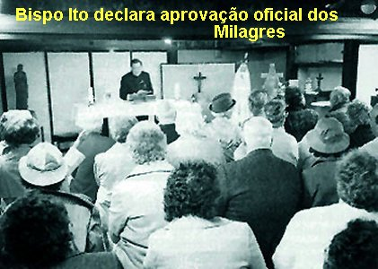

AS LÁGRIMAS DE NOSSA SENHORA
Eram 9 horas da
manhã do dia 4 de Janeiro de 1975, o Padre Teiji estava sentado numa cadeira, no
presbitério, ao lado do Altar de 
“A Imagem de NOSSA SENHORA está chorando”!
Na verdade, o Padre já estava com um pressentimento que alguma coisa estava para acontecer, justamente para dar autenticidade às três Mensagens que a MÃE DE DEUS tinha transmitido a Irmã Inês. Assim, imaginou que chegaria uma admirável graça em perfeita sintonia com o conteúdo das Mensagens, emanada da grandeza infinita da misericórdia do SENHOR, com o objetivo de sensibilizar todos aqueles que amam DEUS e nossa MÃE SANTÍSSIMA, enchendo todos os corações de uma profunda e apaixonada gratidão.
E a notícia chegou: NOSSA SENHORA estava chorando! Sim, Ela estava derramando sentidas e doloridas lágrimas, porque a humanidade não está acolhendo as súplicas de suas Mensagens, continuando a viver de maneira egoísta e audaciosa, cada vez mais distante de DEUS. Ela não pode e não quer aceitar este procedimento escandaloso e pecador. Não cabe no Coração e na mente da SANTA MÃE aceitar que nós, os seus filhos queridos, fechemos os olhos a DEUS e caminhemos vigorosamente no exercício do mal! Por isso Ela estava chorando... NOSSA SENHORA chora de verdade, porque Ela quer o nosso amor, quer a nossa presença honesta e calorosa, exercitando com respeito e dignidade uma vivência harmoniosa e fraterna entre nós, e derramando a ternura de nosso amor sincero e dedicado ao SENHOR DEUS e nosso CRIADOR.
A Comunidade religiosa correu para a Capela... De joelhos agradeciam a DEUS e pediam perdão pelos seus muitos pecados : “SANTA MARIA, perdoai-me. Sou eu que vos faço chorar. Perdão SENHOR, perdoai-me, porque sou uma pecadora”. E assim muitas vozes repetiam incessantemente, o pedido de perdão pelas ofensas causadas, diante das lágrimas tristes da VIRGEM MARIA, que descendo de seus olhos, corria pela face e banhava o seu Corpo.
As Irmãs e o Padre ficaram preocupados... Sabiam que a única coisa que podiam fazer para aliviar o Coração da MÃE DE DEUS, era rezar e fazer sacrifícios, para amenizar as dores causadas, por causa dos pecados do mundo. A Irmã Inês, não se afastava de junto da Imagem da VIRGEM. Não procurava nem as refeições necessárias a sua saúde. Foi preciso a Irmã Superiora com um imenso amor, fazê-la compreender a necessidade de continuar seguindo os horários da Comunidade, por que esta era também a Vontade do SENHOR.
Dom Ito, o Bispo Diocesano, chegou e logo foi a Capela para presenciar o fenômeno. A imagem, com os traços fisionômicos tristonhos, continuava a chorar. Ele, com carinho e cuidadosamente, com algodão, permaneceu enxugando as lágrimas, por um bom tempo. Depois se ajoelhou diante da VIRGEM e rezou um Terço. Os dois olhos da imagem de madeira brilhavam, as lágrimas se acumulavam e transbordavam, correndo exatamente como num ser humano.
No princípio a admiração foi de tal dimensão, que ninguém se lembrou de tirar fotografias, mas depois isto foi feito em quantidade, e assim, conservam-se como provas objetivas.
As lacrimações começaram no dia 4 de Janeiro de 1975, e sucedeu-se em intervalos mais ou menos regulares, às vezes diariamente, até o dia 15 de Setembro de 1981 que foi o dia em que as lágrimas correram pela última vez. No mencionado período a imagem de NOSSA SENHORA chorou 101 vezes, ou seja, durante 101 dias. É importante esclarecer, que a imagem da VIRGEM às vezes chorava duas ou três vezes ao dia, depois parava. Houve ocasiões em que ela chorou apenas uma vez, com a duração de um curto espaço de tempo e também, de outras vezes teve dias em que Ela não chorou.

“A VIRGEM MARIA chora porque deseja a conversão do maior número possível de pessoas; deseja que as almas se consagrem a JESUS e ao PAI Celeste, por Seu intermédio, ou seja, por intermédio da SANTA MÃE. O Padre Teiji lhes disse hoje numa conferência, que a vossa fé arrefece quando não vedes prodígios. È que a vossa fé é fraca. A SANTÍSSIMA VIRGEM alegra-se com a consagração do Japão ao Seu CORAÇÃO IMACULADO, pois Ela ama o Japão. Mas entristece por ver que esta devoção não é tomada a sério. A SANTÍSSIMA VIRGEM aguarda todos vós, de mãos abertas, para vos conceder graças. Espalhai a Devoção a NOSSA SENHORA.
Vós que acreditastes ao ver as lágrimas de Maria, divulgai o maior número de vezes possível, com a permissão do vosso Superior, a fim de consolar os CORAÇÕES de JESUS e de MARIA. Espalhai a Devoção com coragem, para a maior glória de DEUS.
Transmita as minhas palavras ao vosso Superior e àquele que vos dirige”.
Na sequência dos dias, Dom Ito levou as gazes que serviram para limpar o sangue da chaga na Mão da VIRGEM MARIA e levou também o algodão utilizado para limpar as lágrimas da imagem de madeira, ao Professor Sagisaka da Faculdade de Medicina Legal de Akita, solicitando que procedesse a um exame minucioso, segundo todas as regras do rigor científico, mas não revelou a origem do sangue da gaze e nem do líquido que impregnou o algodão.
Depois de duas semanas de longa expectativa, o Dr. Sagisaka entregou-lhe um documento com o resultado da análise:
a) As matérias aderentes as gazes são de Sangue Humano.
b) O suor e as lágrimas absorvidos pelos dois pedaços de algodão são também de origem humana.
c) O sangue pertence ao grupo “O”; o suor e as lágrimas pertencem ao grupo “AB”
Então, cientificamente ficou provado que as lágrimas e o sangue eram verdadeiros e humanos.
CALÚNIAS E PRIVAÇÕES
Três empresas de televisão, exibiram imagens de NOSSA SENHORA chorando e, a revista japonesa “Catholic Graph”, colheu fotografias importantes das lágrimas da imagem da VIRGEM MARIA e durante muitos anos, publicou artigos colocando em evidência os fatos ocorridos com a imagem de NOSSA SENHORA, no Mosteiro das Servas da Eucaristia.
Todavia, aqueles admiráveis e extraordinários acontecimentos, foram muito lentamente divulgados no Japão e na Ásia. Demorou muito mais, a alcançar a Europa e podemos afirmar que somente há poucos anos aquela verdade chegou ao nosso Continente.O mal, que está disseminado em todas as partes, conseguiu num razoável período, ocultar o "precioso aviso Divino".
O que realmente
influiu e ajudou a ocultar verdadeiramente os fatos, e fez retardar em muito a
divulgação das preciosas manifestações 
Os fenômenos de lacrimação cessaram completamente, a partir do momento em que foi constituída uma Comissão de Inquérito, para apurar e relatar minuciosamente todas as ocorrências com a imagem da VIRGEM MARIA. O Bispo Dom Ito falou para as Irmãs e para o Padre Capelão, a necessidade imperiosa de obedecer e responder com clareza e disposição, todas as perguntas que lhes fossem formuladas. Alguns meses depois, ele mesmo se dirigiu ao Vaticano, á Congregação para a Doutrina da Fé, e a Congregação para a Propagação da Fé, onde expôs os fatos e pediu a sugestão de pessoas competentes e honestas. Então, as autoridades do Vaticano lhe instruíram: “Se não ficar convencido com as conclusões desta Comissão, como autoridade que é (Bispo Diocesano), tome a iniciativa de nomear outra Comissão e retorne o estudo a partir da estaca zero”.
Para as pessoas sérias, que desejavam de fato apurar a verdade, quanto mais estudavam o caso, mais a origem sobrenatural dos acontecimentos se mostrava evidente. Mas, a maioria dos membros da Comissão Primeira, mantinham-se céticos e indiferentes.
Entretanto. mesmo em pequenos grupos, os peregrinos apareceram e sem parar, continuavam a visitar a imagem da VIRGEM, vindos de todas as partes do Japão.
NOVAS LACRIMAÇÕES
NOSSA SENHORA, triste com o resultado incrível que a Primeira Comissão de Inquérito, nomeada pela Conferência Episcopal apresentou no dia 26 de Julho de 1978, sua imagem em Yuzawadai assumiu feições de pesar e voltou a “chorar”, derramando dolorosas lágrimas, que atestavam o seu repúdio e insatisfação. E assim, chorou muitas vezes, até a Festa de NOSSA SENHORA DAS DORES, em 15 de Setembro de 1981, completando os 101 dias de lacrimações.
Verdadeiramente é impressionante a visão das lágrimas humanas que irrompem de uma simples imagem de madeira, representando a MÃE DE DEUS... Elas têm qualquer coisa de comovente e apaixonante, que vai certinho, bem direto, ao fundo de nosso coração.
Todos nós sabemos que a natureza humana foi feita de tal maneira, que mesmo os mais marcantes acontecimentos da vida, mesmo aqueles que não deveriam ser esquecidos, não resistem à ação do tempo, e as impressões esbatem-se e muitas recordações apagam-se. Por essa razão, um sentimento profundo me faz pensar que aquelas lágrimas também foi uma graça muito especial, dada a cada um de nós, aqueles que as viram pessoalmente e os que as tem apreciado pelas fotografias e filmes, uma graça carinhosa e afetiva, que atuou fazendo reviver em nosso coração, as pungentes e dolorosas lágrimas derramadas por MARIA, a nossa SANTÍSSIMA MÃE, diante de seu FILHO JESUS suspenso na Cruz, participando maternalmente do Divino e Cruel Sacrifício Redentor de Seu Divino FILHO.
No dia 12 de Setembro de 1981 aconteceu a última reunião da Nova Comissão de Inquérito que tinha sido nomeada a pedido de Dom Ito. Na manhã deste mesmo dia, NOSSA SENHORA chorou pela centésima vez. As Irmãs se apressaram em telefonar a fim de comunicar o fato, aos membros da Nova Comissão Diocesana. O veredicto dado pelos membros da Nova Comissão foi favorável, confirmando a veracidade das manifestações sobrenaturais. Todavia, Dom Ito não quis ainda se manifestar. Sua prudência o fez lembrar do veredicto negativo, dado pela Comissão anterior. Por isso, decidiu aguardar o desenvolvimento das ocorrências. O senhor Bispo deixou aquele importante assunto nas mãos de DEUS. Ninguém “melhor” que o SENHOR, para esclarecer no momento certo, o conteúdo de toda verdade.
Pouco depois, o Anjo da Guarda apareceu a Irmã Inês e lhe disse:
“As pessoas pedem um milagre maior que as lágrimas, mas não haverá mais nenhum milagre”!
E como já dissemos, no dia 15 de Setembro de 1981, a imagem de madeira da VIRGEM MARIA, derramou lágrimas pela última vez.

“O número 101 referente ao número das lacrimações, tem um significado concreto. Significa que o pecado entrou no mundo por uma (1) mulher, e que foi também por uma (1) mulher que a salvação veio ao mundo. O “zero” (0) que está entre os dois “Um” (1); significa o DEUS ETERNO que existe de eternidade em eternidade. O primeiro “Um” (1) representa Eva e o último, representa a VIRGEM MARIA”.
No dia 25 de Março de 1982, Festa da Anunciação, a Irmã Inês, depois da adoração do SANTÍSSIMO, o seu Anjo da Guarda voltou a lhe aparecer e trouxe-lhe a seguinte Mensagem:
“A surdez faz-te sofrer, não é verdade? Aproxima-se o momento de tua cura completa. Por intercessão da VIRGEM SANTA E IMACULADA, exatamente como da última vez, diante DAQUELE que está realmente presente na Eucaristia, os teus ouvidos serão definitivamente curados, para que se cumpra a Obra do ALTÍSSIMO. Haverá ainda muitos sofrimentos e obstáculos provenientes do mundo. Nada tens a recear. Suportando e oferecendo o seu sacrifício, serás protegida. Oferece e reza. Transmite o que Eu te disse àquele que vos dirige e pede-lhe conselho e orações”.
No dia 1º de Maio, a Irmã Inês recebeu outra Mensagem de seu Anjo da Guarda, durante a adoração do SANTÍSSIMO SACRAMENTO:
“Os teus ouvidos serão definitivamente curados neste Mês consagrado ao IMACULADO CORAÇÃO DE MARIA. Serão curados como da última vez por AQUELE que está realmente presente na Eucaristia. Aqueles que acreditarem neste Sinal, receberão abundantes graças. Haverá opositores, mas tu nada tens a recear”.
Padre Teiji, que havia aconselhado a Irmã Inês, a não divulgar a noticia da cura antes que ela acontecesse, agora, diante do segundo aviso do Anjo, junto com a Irmã Inês, ficaram na expectativa da ocorrência do milagre, a qualquer momento. E assim, imaginaram que o prodígio poderia acontecer num domingo, e vendo o calendário, perceberam que o último domingo de Maio seria o Domingo de Pentecostes e também, véspera da Festa da Visitação... Seja como for, os domingos sucederam-se, e finalmente chegou o último Domingo do Mês, dia 30 de Maio de 1982, Festa de Pentecostes. A expectativa do Padre e da Irmã era muito grande. Após a adoração do SANTÍSSIMO, Padre Teiji pegou o Ostensório com JESUS SACRAMENTADO e deu a bênção, e ressoando a campainha, foi exatamente neste momento que NOSSO SENHOR, misericórdia infinita, concedeu a Irmã Inês a graça especial de poder ouvir novamente, ficando completamente curada de seus males.
Assim que terminaram as invocações, com o Padre Teiji ajoelhado no seu lugar, ele ouviu a Irmã Inês lhe dizer:
“Acabo de receber a graça da cura. Peço que recitemos o “Magnificat” em ação de graças”.
Sua emoção foi
muito grande... Então subiu ao Altar e colocou o SANTÍSSIMO SACRAMENTO no
Sacrário e voltando para a 
No dia seguinte, pela manhã, a Irmã Inês foi ao serviço de Otorrino do Hospital da Cruz Vermelha, que já frequentava há muito tempo, e lhe fizeram um exame completo e minucioso nos ouvidos, ficando constatado que estavam totalmente curados, os dois ouvidos estavam absolutamente perfeitos. Conhecedor do caso dela, os médicos Dr. Arai e Dr. Sawada, do Hospital Rôsai de Joetsu, que a examinaram e as enfermeiras, respeitosamente inclinaram-se diante dela, felicitando-a pela cura e por ter sido agraciada com um milagre tão extraordinário.
POSIÇÃO DA IGREJA
Em Abril de 1984, o Reverendíssimo John Shojiro Ito, Bispo de Niigata, após anos de investigação e acompanhamento de todos os fenômenos ocorridos no Instituto das Servas da Eucaristia, e depois de consultar a Santa Sé, declarou numa extensa Carta Pastoral, que os eventos de Akita eram de origem sobrenatural e autorizou a Diocese, a veneração da imagem da SANTÍSSIMA MÃE DE AKITA.
Em Junho de 1988, o Cardeal Joseph Ratzinger (posteriormente Papa Bento XVI), que era o Prefeito da Congregação para a Doutrina da Fé, depois de ter analisado todo o Processo Canônico, proferiu julgamento definitivo sobre os eventos de Akita, no Japão, AFIRMANDO QUE ERAM CONFIÁVEIS E DIGNOS DE FÉ.
: